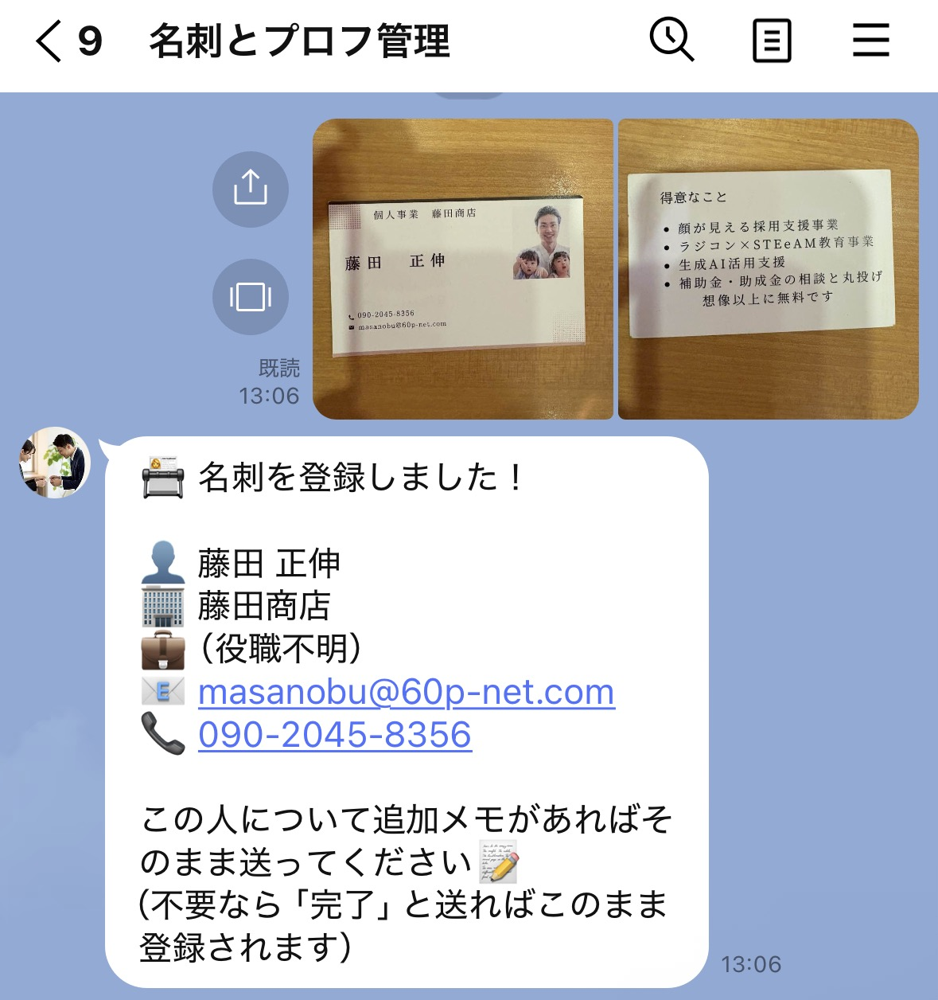
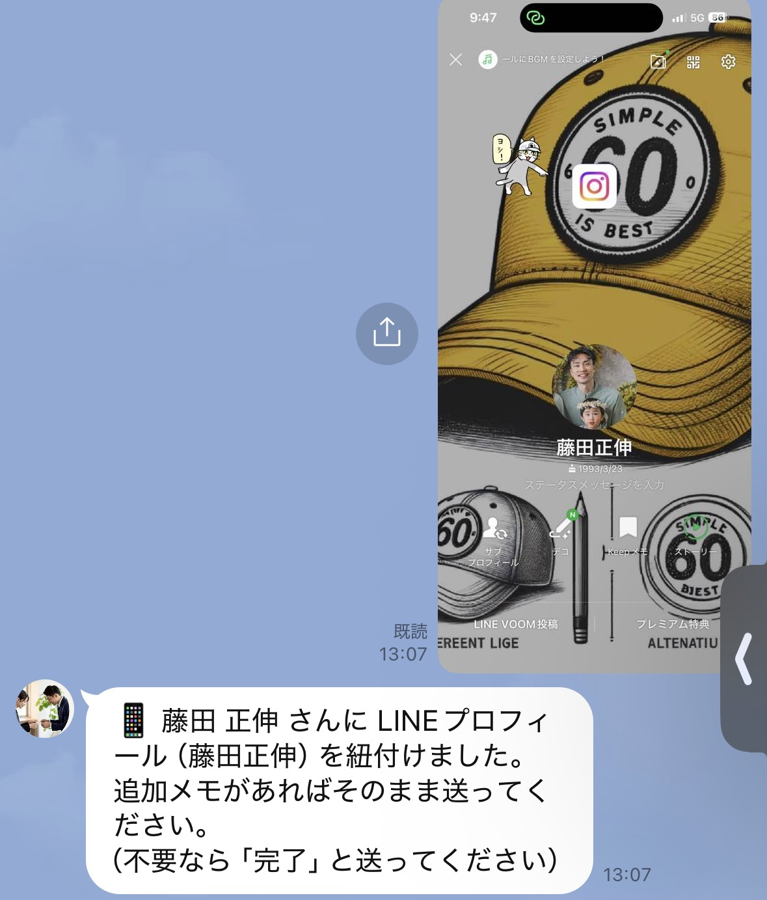
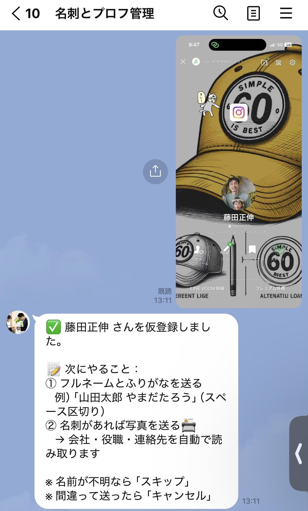
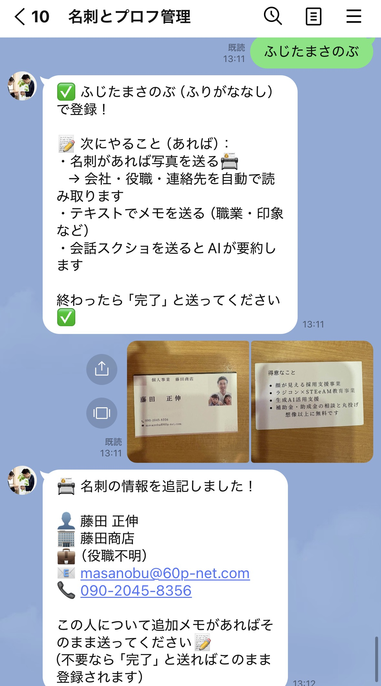
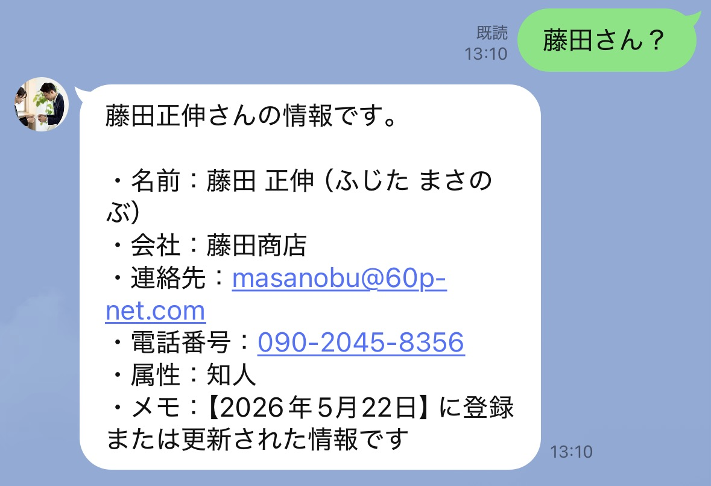

LINEに写真を送るだけで、人脈が勝手に整理される
アプリのインストール不要 ／ 操作はLINEのみ名刺の写真をそのままLINE迷子に送る。裏表2枚同時でもOK。会社名・氏名・電話番号・メールアドレスが自動で読み取られる。LINEでつながっていない人も名刺だけで登録できる。

裏表2枚まとめて送信 → 会社・連絡先が自動登録される
名刺登録後にLINEでつながったら、プロフィール画面のスクショを送るだけ。名刺のデータと自動で同一人物として紐付けられる。改めて登録し直す必要はない。

プロフを送ると「LINEプロフィールを紐付けました」と返ってくる
相手のプロフィール画面をスクリーンショットしてそのまま送る。「この方のフルネームとふりがなを教えてください」と返ってくるので名前を入力するだけ。

プロフを送る → 仮登録 → 名前を入力するだけ
名前入力後に名刺の写真を送ると、会社名・役職・電話・メールが自動で読み取られて同じ人のデータに追記される。プロフと名刺が1人のデータとして完成する。

名刺を送るだけで会社・連絡先がプロフのデータに自動追記される
LINEに自然な言葉で聞くだけ。「藤田さん？」「保険の人は？」「先週会った人の連絡先は？」など、登録してある人の中から条件に合う情報が返ってくる。

名前や業種・印象で検索 → 連絡先までまとめて返ってくる
内見後にスクショを送る。3ヶ月後に「戸建て希望だった人いたっけ？」と聞けば出てくる。
名刺交換したその場で写真を送る。LINEにつながっていない見込み客も全員管理できる。
紹介でつながった人の経緯をメモしておく。「誰の紹介だったか」もLINEで聞けば返ってくる。